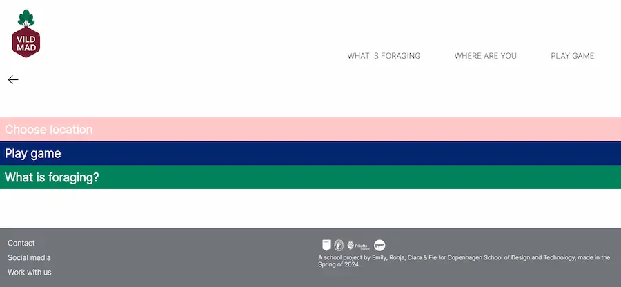

2. SEM
I dette semester er vi gået mere i dybden med brug af JavaScript og Astro samt styrket det, vi lærtre på første semester. Vi har udelukkende arbejdet i teams og med reelle virksomheder og cases.
Læring
- Kode et responsivt site fra bunden med mobile first
- Grundlæggende JavaScript.
- Hjemmesidestruktur
- Designprincipper- og konventioner
- Forskellige test- og researchmetoder
- Bæredygtige hjemmesider
- Indsamling + behandling af indhold
- Arbejde med Adobeprogrammer + Figma
- At hoste et site
UDVALGTE PROJEKTER
VILDMAD.DK
Casen gik ud på at bygge en tema-side for Vild Mad. De ønskede at udvide og skabe undersider målrettet
skolebørn omkring 7. klasse. Deres mål var at lære unge mennesker om sankning, og vores produkt skulle være
anvendeligt i en undervisningssammenhæng.
Målet for selve opgaven var for os at lære at fetche data fra en database.
MIN ROLLE
Vi var 4 i gruppen. Jeg og et andet gruppemedlem generede mange ideer til designet, mens de andre fokuserede
på Astro. Jeg udviklede wireframes, layoutdiagram og kom med flere forslag til logoer som jeg udarbejdede i
IIlustrator. Jeg kodede og stylede alle siderne pånær produktsiden, som dem der fokuserede på Astro lavede.
KARRUSEL FESTIVAL
Vi fik til opgave at udvikle og kode et redesign til Karrusel Festival. Målet var at få en
forståelse af designsystemer og at oprette komponenter og variabler både i figma og i vscode.
MIN ROLLE
Jeg designede og kodede FAQ siden, og jeg tegnede tilbagefingeren i Procreate
I TRÅD MED VERDEN
Casen gik ud på at designe og udvikle en webfeature til en lille virksomhed. ITMV er en tøjbutik, giver nyt
liv til kasserede tekstiler bidrage til den grønne omstilling samt skabe jobs til socialt udsatte kvinder,
som fx flygtninge.
MIN ROLLE
Jeg genererede mange af vores idéer til vores design, som fx garnnøglen, knappenåle og slideren i toppen.
Jeg var også den der kodede slideren i toppen med JavaScript, og så kodede jeg en lydafspilningsfunktion,
som jeg er så stolt af. Udover det var jeg master ift. vores Astro.
DFERMENTS
Dette er mit eksamensprojekt, som min gruppe og jeg næsten er ved at aflevere. Opgaven var at finde en
virksomhed og hjælpe dem med at udnytte deres digitale platforme. Vi har også udarbejdet et redesign af
vores kundes hjemmeside.
Virksomheden hedder Dferments, og han sælger kombucha.
Vi har lige vist prototypen til ham, og han er faktisk interesseret i at købe den af os efter eksamen.
MIN ROLLE
Har været at finde vores h1-font, kode kontaktsiden samt header, footer og burgermenu, lavet dem til
komponenter i VsCode, og samlet dem sammen til at danne vores MainLayout
Vi har endnu ikke hostet vores site, men klik på knappen for at se et billede af kontaktsiden.